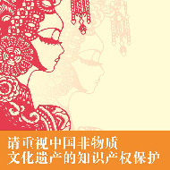

第四届非遗博览会于10月11日开幕
2016年10月11日

潍坊布老虎造型各异，是一种极具乡土气息的民间工艺品。
来自婺源的油纸伞艺人在博览会现场展示独特的制作工艺。
传神的石影雕、清新脱俗的苏绣、温润古朴的汝瓷……近日，以“非遗走进现代生活”为主题的第四届中国非物质文化遗产博览会（简称非遗博览会）在济南拉开帷幕。作为历届非遗博览会中规模最大的一次，本次展会包含非遗精品展、学术成果展、项目比赛、展示交易等六大板块，充分展示非遗融入现代生活的丰硕成果和生动实践，从观赏性、体验感和参与程度等多个方面让人们近距离接触璀璨的非遗文化。本报记者将带您一同走进非遗博览会，感受来自不同地区的瑰丽文化之美。